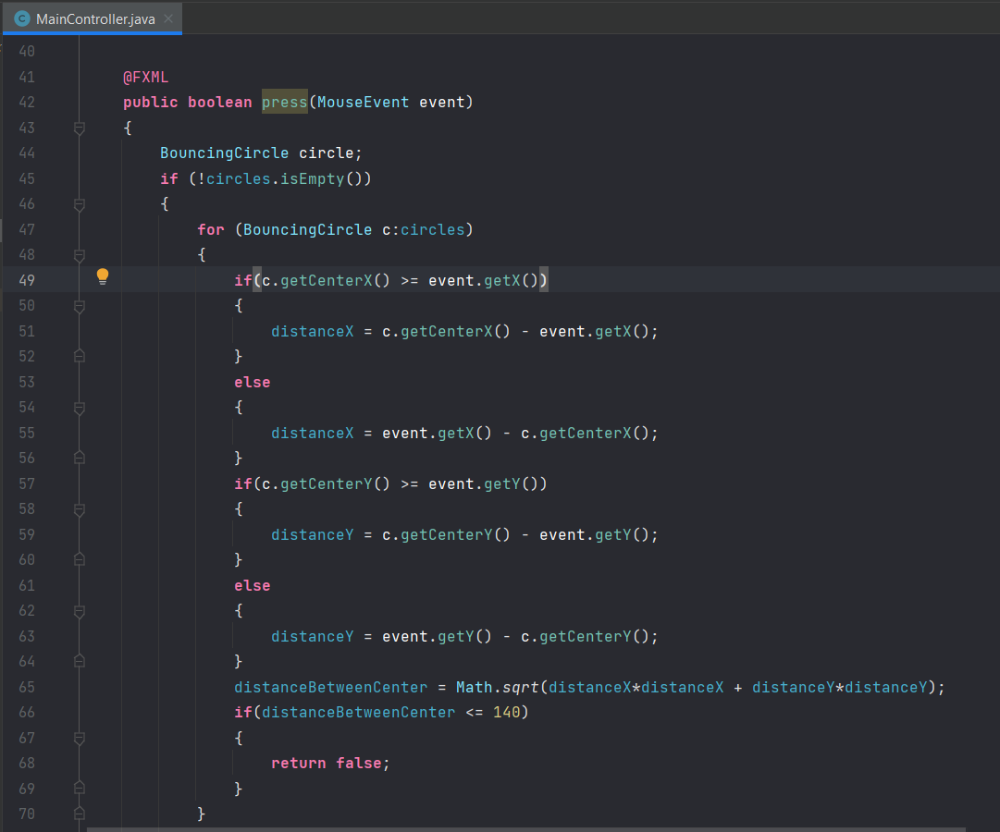
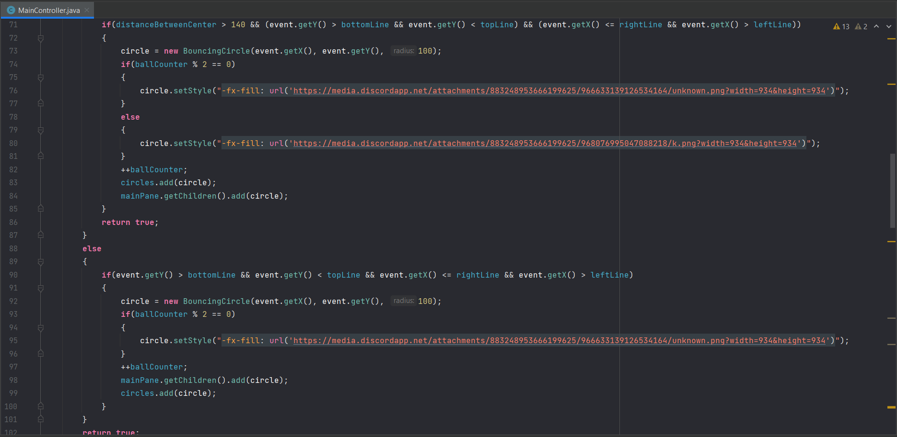
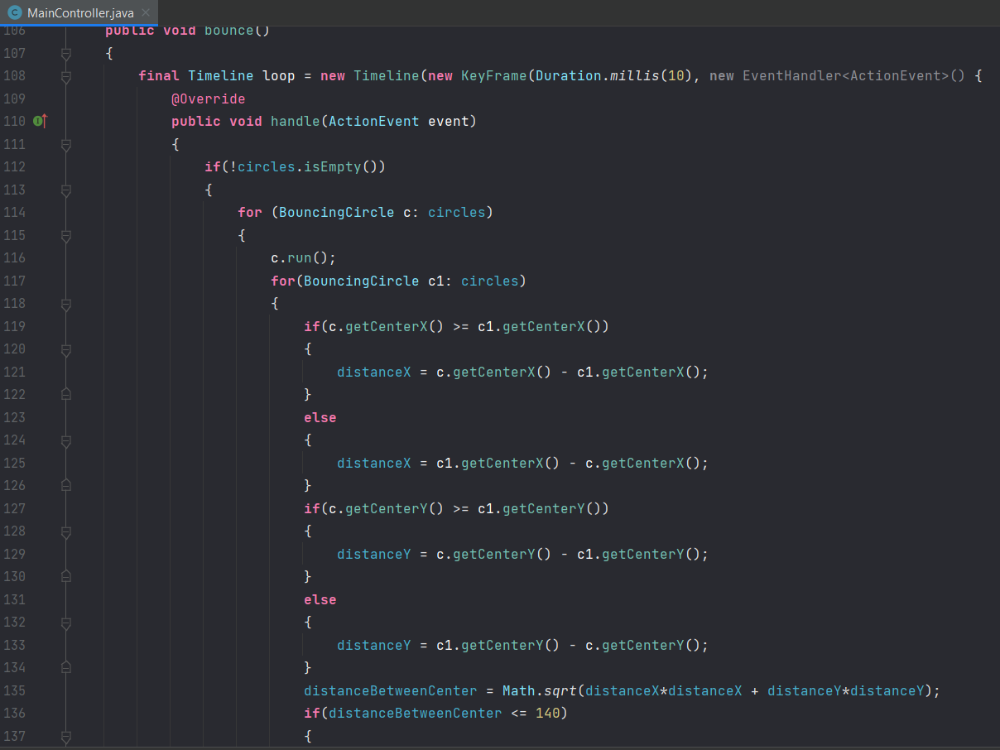
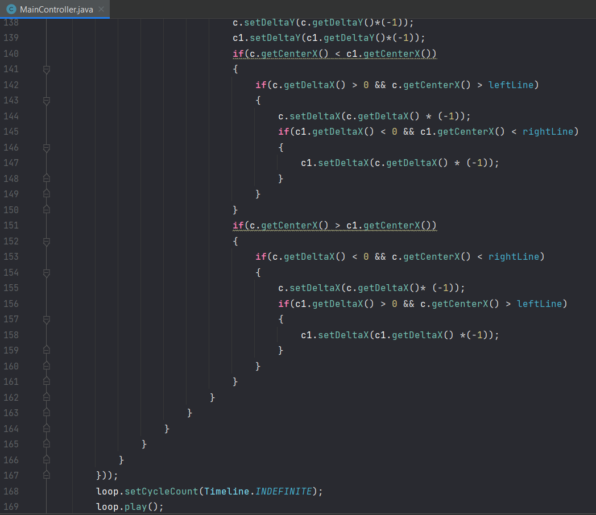

First of all we would like to spawn a ball to start bouncing, this we do with the following function - Press
In this part of the function we are looking out for other balls in order to avoid spawning a ball inside of another ball, this we do by using the Pythagorean theorem to find the distance between an already spawned ball and the position of the click if it is less than 140 pixels a new ball would not be spawned.
In this part of the function we check for collisions with the walls, so as not to spawn a ball inside of a wall after that we create an object of the threaded class then we have a simple if to check whether the number of balls is even, if it is we would like to spawn a ball that looks like a football and if it is not we would like to spawn a ball that looks like a basketball then we add to the counter of the balls and add them inside of an array list storing all balls.
Here you can see the use for the array list. First we check if the array list is empty, if it is not we start to do checks for all the balls stored inside of the array list. We do that by comparing one ball with every other ball inside fo the array list, this is done with a nested for each loop. Again we need the distance between the balls in order for us to see if they touch or not.
If the balls touch each other they bounce off one another in directions different than the one they were going towards.